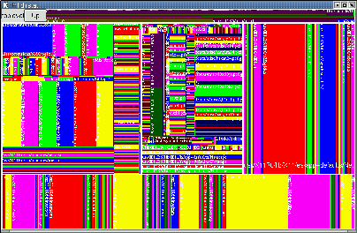
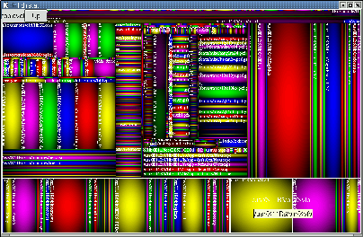

Documentation for KTreeMap
KTreeMap is a Qt/KDE widget written for KDirStat that displays information
about disk/directory usage as a Treemap graphics.
KTreeMap is written by Alexander Rawass <alexannika@users.sourceforge.net>
KDirStat is written
by Stefan Hundhammer <sh@suse.de>
KTreeMap is currently in heavy development, expect newer versions any
time
Example screenshots:

The left picture shows my /usr/X11R6 tree drawn with shading 'Flat'
The right picture shows /usr/X11R6 with 'Simple Cushion' shading
ToDo:
-
add Labels, Buttons, Toolbar (Up,ZoomIn,ZoomOut,SaveAsBitmap)
-
add Options in Menu, at least for paintmode, drawmode, start_direction
-
get ToolTip working
-
Popupmenu (delete this file, delete this dir, execute command 'xterm' in
directory, etc.)
Bugs:
-
Cushions a la SequoiaView are not yet working
-
moving ToolTip not working
-
Labels/Button are not appearing correctly above the drawing area
-
drawmode=DM_FILES not working correctly
Planned:
-
squarified treemaps
-
moving (drag'n'drop) of files into other directories
-
re-writing KTreeMap to be a general abstract Qt/KDE widget for visualization
of general hierarchies
KDirTreeMap will then be an implementation for this abstract KTreeMap
that displays disk usage
-
writing a FileRequester based on Treemaps
-
'selling' KTreeMap to Konqueror or KDE in general
-
re-writing KTreeMap to GtkTreeMap for use with Gtk/Gnome
-
subclassing/extending QListView to have an TreeMap view in _every_ Application
that uses a QListView to display hierarchies of any sort (file systems,
menu items, bookmark folders)
Ideas for the usage of Treemaps:
-
Disk Usage Display
-
File System Navigation (as a FileRequester or 'graphical' CD)
-
Navigation help in large Bookmark folders
-
Navigation help in large Source Code projects, i.e. in kdevelop
-
Profiling Information Display (for use with gprof output)
Other similar Projects:
-
SequoiaView (from which
I got inspired), sadly, it is not Open Source
*thank you very much* for the inspiration they gave me by writing SequoiaView,
when I first saw SequoiaView, I immediately knew that this was the
Tool I was missing so long,
and that the idea behind Treemap is a genius, while the algorithm is
utterly trivial
I am *fascinated* how great this Treemap idea is and how simple the
implementation is ;-)))
-
Documents/Thoughts on Treemaps by Ben
Shneiderman
He seems to be the inventor of Treemaps, I declare him a genius!
*thank you* for this great visualization idea
-
TreeMap java libraries
-
JTreeMap
java treemap component
Alexander Rawass <alexannika@users.sourceforge.net>
Last modification Date: 19 June 2001